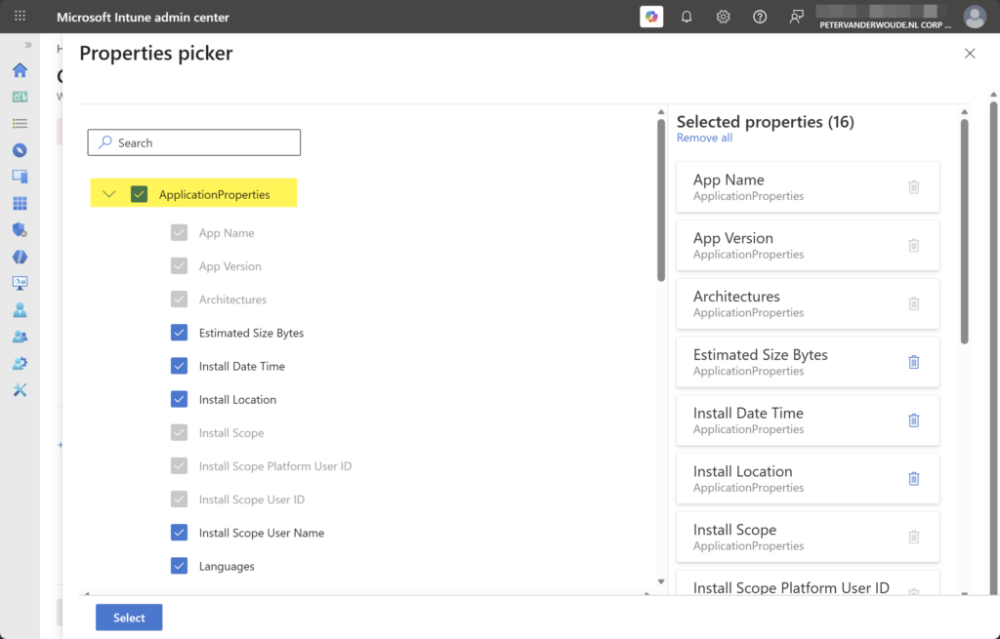
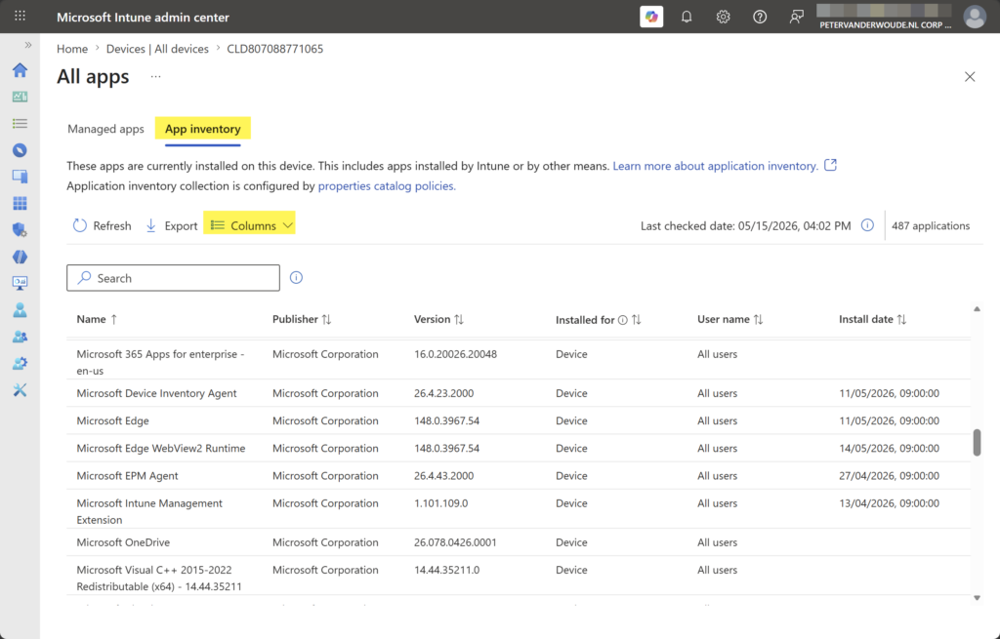

This week is all about the new and enhanced app inventory for Windows devices. A lot has been written about that feature already, but it is such an important enhancement that it deserves it place on this blog as well. For many years the best thing for app inventory in Microsoft Intune was the Discovered apps report. That report provided some pretty limited insights abouts the apps that are installed on the devices and the totals for all devices in the environment. The sources used for those insights, however, were pretty limited, which was the main reason why the information was never really useful. That might all change now, with the enhancements to the app inventory for Windows devices. It now uses a new upload model and underlying data model. That should take care of more and better up to date app inventory data. Initially, however, only available per device. This post will be about the new app inventory, the configuration, and the experience.
Introducing enhanced app inventory
When looking at the new and enhanced app inventory for Windows devices, it is good to understand that it is documented as being the intended long-term replacement for the Discovered apps. The good news is that the new and enhanced app inventory actually does a lot more. Not only is it a faster, it also collects more data about the apps. The app inventory goes from having the app name and version, to having over 20 application properties available. However, not every app has the same information available. That means that not every application property has data available for every app. The new and enhanced app inventory is available via the Properties Catalog. The table below provides a brief overview of the currently available application properties.
| Application properties | Description | |
|---|---|---|
| 1 | App Name App Version Publisher Architectures Install Scope Install Scope Platform User Id Install Scope User Id | This group of application properties are default selected in the properties catalog, when selecting the application properties section in the properties catalog. |
| 2 | Estimated Size Bytes Install Date Time Install Location Install Scope User Name Languages Modify Command Platform Specific App ID Platform Specific App ID Type Uninstall Command | This group of application properties are optional selectable in the properties catalog, when selecting the application properties section in the properties catalog. |
| 3 | MSI Product Code Installed For Last updated Last checked | This group of application properties are not configurable in the properties catalog, but these application properties do show up in the inventory report. |
Note: At this moment the data of the application properties is refreshed every 24 hours.
As the new and enhanced app inventory relies on the Properties Catalog, the Microsoft Device Inventory Agent is now also used for collecting the configured application properties. That agent is installed in C:\Program Files\Microsoft Device Inventory Agent and runs as the InventoryService service. That service automatically starts when Windows is started. The agent collects application data of Win32 apps using the uninstall registry keys and data of Windows Store apps using the package manager API, and stores that data in local SQLite databases. That data is eventually send to Intune. The first sync of that data is a full upload, and following syncs are delta uploads. That makes sure that it is only sending changes since the last data collection. The status of the local activities can be followed in the logfiles of the InventoryAdaptor.log and the IntuneInventoryHarvesterLog.log that are available at C:\Program Files\Microsoft Device Inventory Agent\Logs.
Note: At this moment devices must be enrolled in Intune and Entra joined.
Configuring enhanced app inventory
When looking at the configuration of the new and enhanced app inventory for Windows devices, it is all about the Properties catalog. That profile can be used to determine the additional application properties that should be part of the inventory. After applying that configuration to Windows devices, the Microsoft Device Inventory Agent will be utilized to perform the inventory activities. The following steps walk through the creation of that profile and enabling additional application properties.
- Open the Microsoft Intune admin center portal and navigate to Devices > Windows > Configuration
- On the Windows | Configuration page, click Create > New policy
- On the Create a profile blade, select Windows 10 and later > Properties catalog and click Create
- On the Basics page, provide at least a unique name to distinguish it from similar profiles and click Next
- On the Configuration settings page, as shown below in Figure 1, click Add settings to browse through the available properties and to select the properties that should be added to the inventory, and click Next
{kind=link}

- On the Scope tags page, configure the required scope tags and click Next
- On the Assignments page, configure the assignment for the required user or devices and click Next
- On the Review + create page, verify the configuration and click Create
Note: The Microsoft Device Inventory Agent will be installed when a Properties catalog profile is assigned.
Experiencing enhanced app inventory
When the configuration for the new and enhanced app inventory is in place, it is pretty straightforward to experience the configuration. Locally on the device that starts with the Microsoft Device Inventory Agent that will be installed, when it wasn’t installed yet for other additional inventory configurations using the Properties catalog. That installation will be visible in C:\Program Files\Microsoft Device Inventory Agent and the InventoryService service will be available between the Windows services. The logs can be followed at C:\Program Files\Microsoft Device Inventory Agent\Logs for more details about the inventory.
The collected app inventory can be found in the new device view in the Microsoft Intune admin center portal. Once that view is enabled, simply select a device and navigate to Tools and reports > All apps > App inventory (as shown below in Figure 2). The first app inventory will be available within 24-hours, and the columns can be used show additional application properties.
{kind=link}

More information
For more information about the enhanced app inventory for Windows devices, refer to the following docs.
Discover more from All about Microsoft Intune
Subscribe to get the latest posts sent to your email.